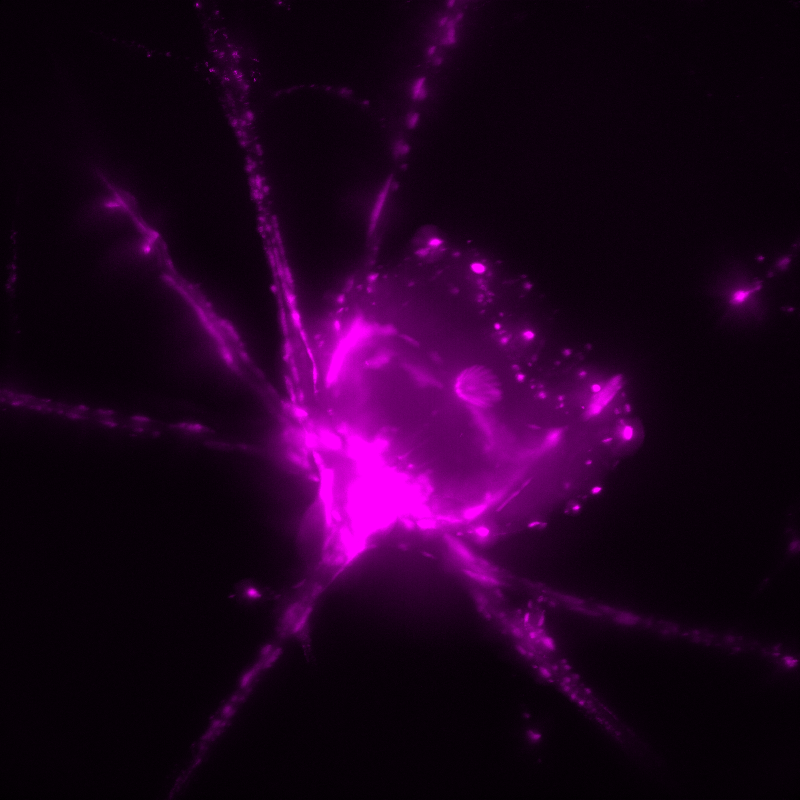

Radiolarian biology
{kind=link}
Radiolarians have been studied since the 1800s and have never been grown in the laboratory. Almost everything known about how these cells actually work comes from watching them alive, in the hours between collection and death.
The problem
Radiolarians have existed on Earth for about as long as animals. They are abundant across the open ocean gyres, and they build cytoskeletal and mineral structures unlike anything in the groups we know well.
They also cannot be cultured, which means the usual routes into a cell are closed. No cell lines, no mutants, no standing supply of material. What is left is fieldwork and microscopy: find the cells, keep them alive, and watch.
Where we sample
Radiolarians are widespread in the oceans. In deep oligotrophic waters we find a diverse assemblage; in shallow water the species we encounter are more constrained. We collect at the Bigelow dock in Maine during the late summer and early fall bloom, and have sampled in Bermuda, Puerto Rico, Norway, the Mediterranean, and the central Atlantic.
Gulf of Maine

In the nearshore estuaries of the Gulf of Maine we see a small number of species with strong seasonality. Three morphospecies turn up predictably year on year, all in late summer and early fall: Plagiacantha, a nassellarian, Acanthometron, an acantharian, and Sticholonche, a taxopodid. A Lithomelissa species appears occasionally.
That narrowness limits what this site can say about radiolarian ecology globally. For a cell biologist it is the opposite of a limitation: one species, in numbers, on a schedule.
Bermuda
{kind=link}
Bermuda sits in the Western North Atlantic, in the Sargasso Sea, surrounded by deep oligotrophic water, and the radiolarian assemblage there is correspondingly broad. A few miles from the Bermuda Institute of Ocean Sciences we can sample below 1000 m and find a multitude of forms.
In the waters off of Bermuda, rhizarians are often the most numerically abundant cells at depth, which still means only roughly one cell in tens of litres of seawater. Concentrating from more than 100,000 litres gives us a sample dense enough to pick a couple of hundred cells from a few 10s of millilitres.
They feed passively. Prey drifts into the long axopodia of radiolarians, acantharians, and foraminiferans, or into the cytoplasmic nets of phaeodarians, and is caught. The larger individuals and the colonial species take small animals.
Puerto Rico
{kind=link}
We sampled south into the Caribbean from the University of Puerto Rico Mayagüez’s marine campus on Isla Magueyes. The assemblage there is different again, with tropical spumellarians and again a wide range of forms.
The second row of the figure includes a Plagiacantha that looks very like the Maine cells. We lost it before we could sequence it, which is the comparison we most wanted.
From Isla Magueyes it is about seven miles due south to water over 500 m deep, and the diversity there is high. On the shallow shelf in between, covered in natural coral reefs, we found a few unhealthy acantharians, but no radiolarians.
Approach
Everything here runs on field-collected cells, which shapes the methods. Live imaging while the cells are still behaving, fixation and microscopy for structure, and single-cell sequencing where a genome is what the question needs.

Radiolaria genome sequencing has its own page: the Plagiacantha genome project, a community effort to build the first radiolarian genome and a model system with it.
Collaborators
- Jeremy Wideman, Arizona State University. Organellar genome organization, sequencing, and assembly.
- Johana Rotterová, University of Puerto Rico Mayagüez. Molecular diversity of protists, with expertise in ciliates and anaerobes, and collection in Puerto Rico.
- Leocadio Blanco-Bercial, Bermuda Institute of Ocean Sciences and Arizona State University. Radiolarian and zooplankton ecology.
- Derk Joester, Northwestern University. Biomineralization and materials characterization.
The wider community
Life of Retaria is a group of early career researchers organizing the global community of people who work on living retarians, sharing data and ideas across labs. Anyone working on these organisms should know about it.
{kind=link}
{kind=link}
{kind=link}
{kind=link}
{kind=link}
{kind=link}
{kind=link}
{kind=link}
{kind=link}
{kind=link}
{kind=link}
{kind=link}
{kind=link}
{kind=link}